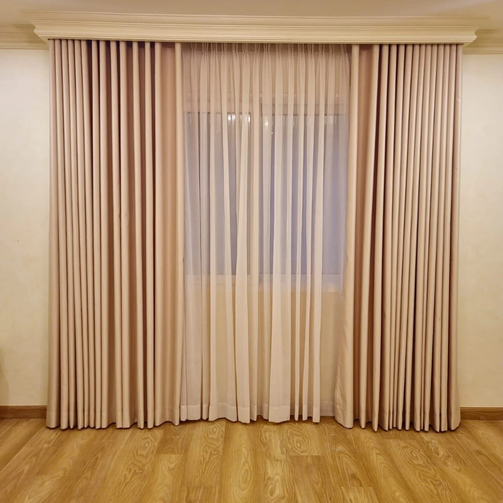
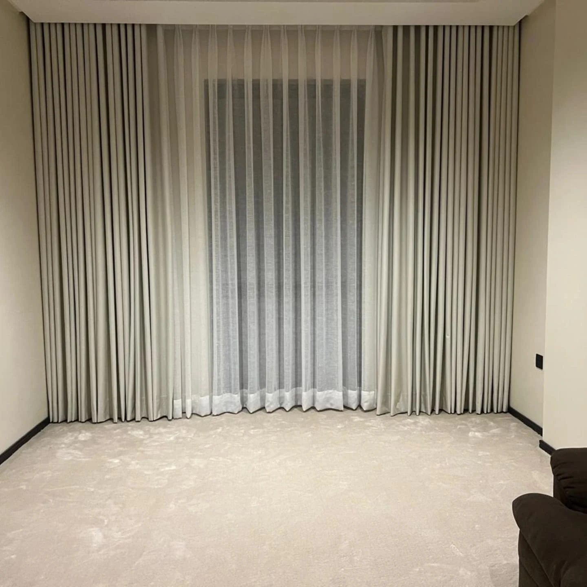
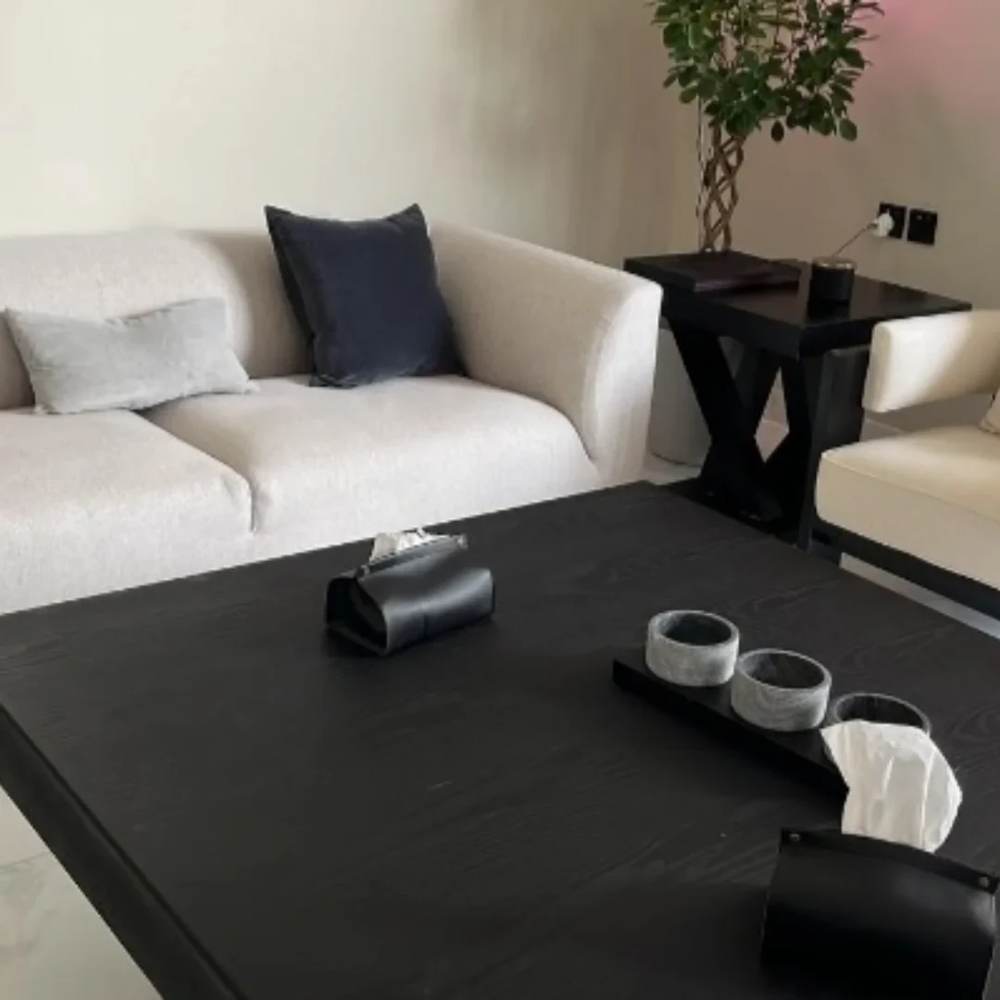

الكنب والمجالس
تفصيل جلسات وكنب ومجالس عربية حسب المقاس والتوزيع والقماش المطلوب.

الخبر والدمام
كنب ومجالس وستائر، تفصيل وتنجيد في الخبر والدمام. صور وتشكيلات تساعدك على اختيار القماش والتوزيع المناسبين.

قماش وتوزيع،
يغيّران إحساس المكان.

الخدمات والتفاصيل
مفروشات الدار الأنيق في الخبر والدمام، ومعرضه في الثقبة بالخبر. يقدم تفصيل وتنجيد الكنب والمجالس والستائر. صور المعرض مختارة من المواد المنشورة بالحساب؛ يراجع المقاس والخامة مع الفريق.
تفصيل جلسات وكنب ومجالس عربية حسب المقاس والتوزيع والقماش المطلوب.
خيارات ستائر بموديلات وألوان متنوعة؛ يحدد الاختيار بحسب النافذة والإضاءة وطابع الغرفة.
تجديد الكنب بالقماش والتفاصيل المناسبة، بعد مراجعة حالة القطعة وما تحتاجه من عمل.
المعرض
نماذج مختارة من صور النشاط المنشورة. اختر التصنيف وافتح الصورة لمشاهدة التفاصيل.
7 صور في المعرض
بداية أوضح
جهّز هذه المعلومات لتبدأ المحادثة مع الفريق بصورة واضحة عن احتياجك.
قبل التواصل
شارك الصورة والمقاسات وتفضيلات القماش، ليؤكد المعرض إمكانية التنفيذ وتفاصيله.
ابدأ بالمقاسات التقريبية وصور المكان، ثم اتفق مع المعرض على طريقة التأكد من القياسات قبل التصنيع.
اختر الخدمة وأضف التفاصيل التي تساعد الفريق على فهم طلبك. ستظهر لك رسالة جاهزة للمراجعة قبل فتح واتساب.
الخبر والدمام
+966541040185